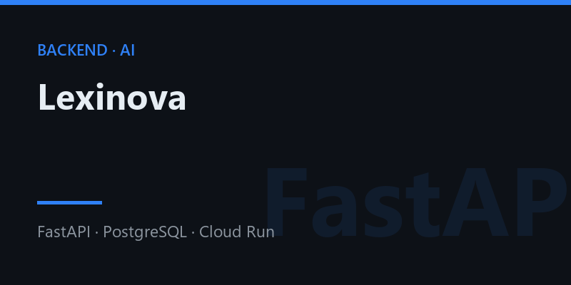

★ VYBRANÝ PROJEKT · V PRODUKCII
Lexinova
AI aplikácia na učenie slovíčok s predplatným PLUS — môj hlavný projekt, od návrhu databázy až po platby a nasadenie.
- AI vytvorí sadu slovíčok z témy, z fotky učebnice (vision OCR) aj z YouTube videa; pri výpadku providera automatický fallback Gemini → Groq → Claude.
- Predplatné PLUS cez Paddle (webhooky) a triedy pre učiteľov, do ktorých sa žiaci pridajú kódom.
- Asynchrónny backend vo FastAPI, PostgreSQL na Supabase, Google OAuth, rate limiting, CSP a GDPR export a zmazanie účtu.
- 581 automatizovaných testov, CI/CD z GitHubu do Google Cloud Run, PWA s offline režimom a Grafana dashboard biznis metrík.